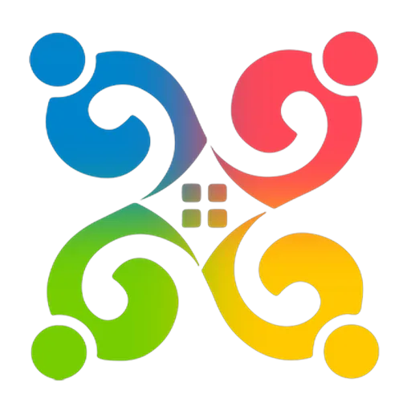

01Notre mission
Promouvoir le développement durable en renforçant les capacités des jeunes et des femmes par l’éducation environnementale, l’autonomisation économique et l’innovation.
- Éducation environnementale
- Autonomisation économique
- Innovation
Fondation AFCD · Depuis 2007
Autonomiser les personnes, renforcer les communautés et créer des opportunités de développement durable.
Autonomisation des jeunes
Aider les jeunes à apprendre, diriger, innover et façonner leurs communautés.
Autonomisation des femmes
Renforcer les compétences, la confiance et l’autonomie économique des femmes dans nos communautés.
Environnement et climat
Agir aux côtés des communautés pour l’inclusion, la responsabilité environnementale et le développement durable.
Association le Futur pour les Chantiers et le Développement
Fondée par un groupe de jeunes bénévoles engagés, la Fondation AFCD donne du pouvoir d’agir aux personnes et renforce les communautés par l’autonomisation des jeunes et des femmes, l’éducation environnementale, l’inclusion numérique et le développement local participatif.

Une mission que nous menons chaque jour, une vision vers laquelle nous avançons, et quatre valeurs qui façonnent notre façon de travailler.
01Notre mission
Promouvoir le développement durable en renforçant les capacités des jeunes et des femmes par l’éducation environnementale, l’autonomisation économique et l’innovation.
02Notre vision
Lire notre histoireUne société sans exploitation ni discrimination, où chacun a les mêmes chances de grandir, de contribuer et de réaliser pleinement son potentiel.
Quatre domaines d’action façonnent chaque programme de l’AFCD. Survolez ou touchez un pilier pour le découvrir.
Autonomisation des jeunes
Accompagner les jeunes dans le développement de leurs compétences de leadership et de citoyenneté, leur participation à la vie communautaire et la création d’initiatives qui répondent aux besoins locaux.
Projets liés
Autonomisation des femmes
Renforcer les capacités et la confiance des femmes ainsi que leur accès à l’apprentissage, au leadership et aux opportunités économiques, pour une pleine participation à la vie communautaire et à la prise de décision.
Projets liés
Environnement et climat
Promouvoir l’éducation environnementale, les pratiques durables et l’action climatique communautaire, et relier les points de vue locaux au dialogue sur les priorités et engagements climatiques du Maroc.
Projets liés
Inclusion numérique et innovation
Améliorer l’accès aux savoirs et compétences numériques, et permettre aux jeunes et aux communautés d’explorer l’intelligence artificielle, les sciences et les technologies émergentes pour apprendre et résoudre des problèmes concrets.
Projets liés
Découvrez comment des idées partagées deviennent des initiatives communautaires porteuses de sens.

Accompagner les leaders émergents par l’entrepreneuriat et l’engagement citoyen.
Leadership Lab 2.0 · project photo
Encourager la sensibilisation environnementale et l’action portée par la communauté.
Eco Citizen · Aït Ourir 2021
Accompagner les jeunes dans l’élaboration de réponses aux défis climatiques.
Youth Green Generation · 2024 call
01 / 03
Du leadership des jeunes à l’action environnementale, notre travail relie les personnes, les idées et les communautés à travers le Maroc.
Ce fut une belle expérience, où j’ai eu la chance d’apprendre de nouvelles choses et compétences tout en rencontrant de nouvelles personnes et en me faisant des amis.
Ikram Fatna ElfennBootcamp Let’s Dialogue · février 2021
Qui en a bénéficié
Des jeunes, des femmes, des habitants et des institutions locales. À Aït Ourir, Eco Citizen a réuni habitants, ONG locales et élus autour des déchets ménagers ; Leadership Lab 2.0 forme de jeunes Marocains à l’engagement citoyen et à l’entrepreneuriat.
Appels à candidatures, nouvelles des programmes et récits de participants.
Ces dernières années, l’AFCD a mené des projets face au changement climatique, aux niveaux local et national. Cet article présente le projet Youth Green Generation et son appel à candidatures pour les jeunes.
Lire le récitLe témoignage d’un participant qui a rejoint un programme d’un an de l’AFCD le dernier jour des inscriptions.
Lire le récitUne participante du Leadership Lab revient sur une année de réseautage, de renforcement des capacités et d’entrepreneuriat social.
Lire le récitVotre voix
Une histoire à partager ?
Anciens, bénévoles et partenaires : racontez-nous le changement que vous avez vu.
Ateliers, formations, journées communautaires et sessions en ligne à travers le Maroc.
The first public event of Moonshot: Artemis Edition, an 18-month initiative empowering Moroccan youth through STEM, space innovation, entrepreneurship and U.S.–Morocco cooperation in emerging technologies.
Les organisations internationales, nationales et locales qui ont soutenu les programmes de l’AFCD.
18partenaires depuis 2007
Envie de soutenir un changement porté par les communautés au Maroc ?
Rejoignez notre communauté, découvrez les opportunités ou collaborez avec la Fondation AFCD pour un impact réel et durable.